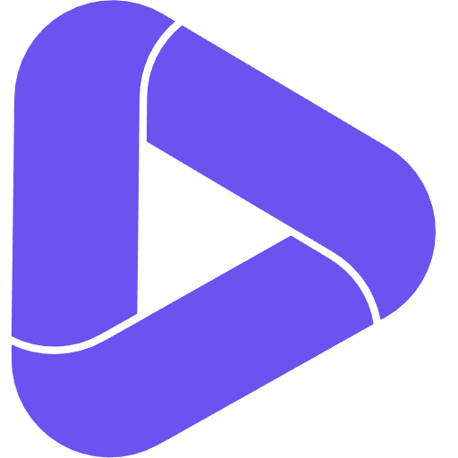
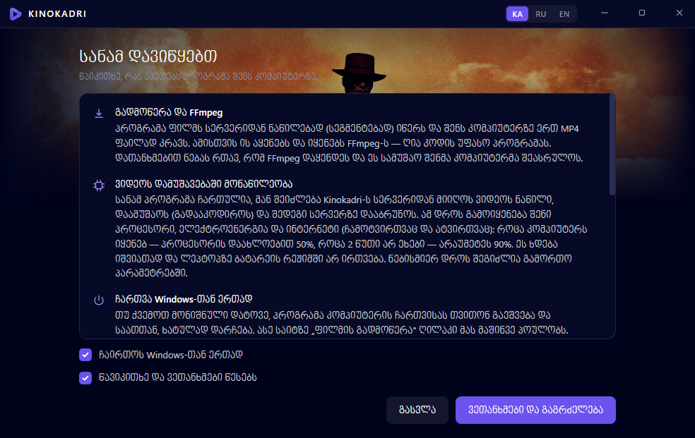
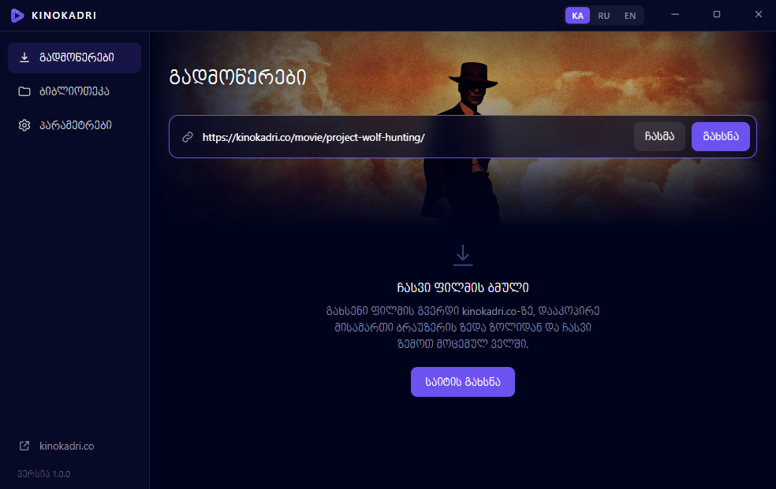
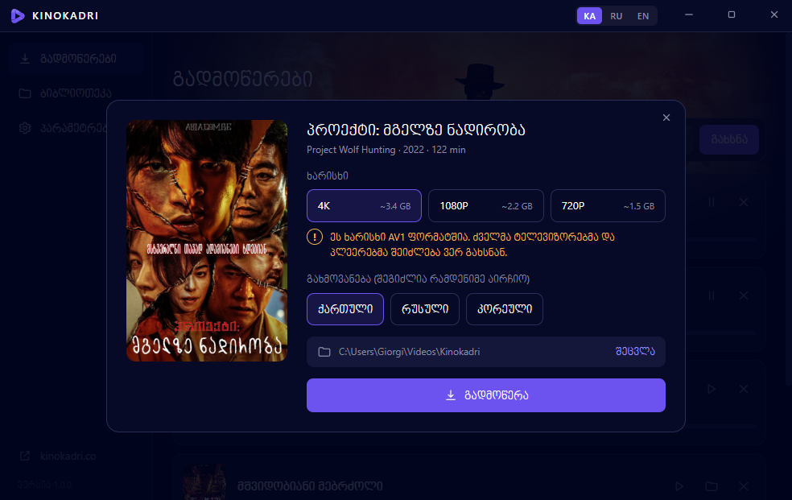
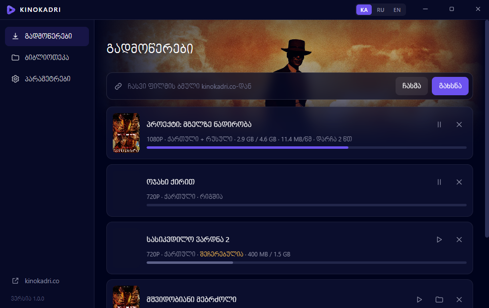

Kinokadri
ფილმის გადმოწერა კომპიუტერზე
kinokadri.co · Windows-ის პროგრამა
- გადმოწერა
- 1.0.18ვერსია
- 50 MBზომა
- Windows10 და 11
- KA · RU · ENენა
- უფასოფასი
როგორ გადმოვწერო ფილმი
დააყენე პროგრამა ერთხელ, შემდეგ კი ნებისმიერ ფილმს სამი მოქმედებით გადმოწერ.
- 1გადმოწერე და დააყენე პროგრამა
- 2დააკოპირე ფილმის ბმული საიტიდან
- 3ჩასვი ბმული პროგრამაში
- 4აირჩიე ხარისხი და გადმოწერე
გადმოწერე და დააყენე პროგრამა
პროგრამა GitHub-ზე დევს. აირჩიე ორი გზიდან ერთი — შედეგი ერთნაირია.
გზა 1. დაყენება ერთი ბრძანებით (PowerShell)
ყველაზე მარტივი გზა: Windows თვითონ ჩამოტვირთავს პროგრამას GitHub-იდან და დააყენებს.
- დააჭირე მაუსის მარჯვენა ღილაკით Windows-ის ნიშანს ეკრანის ქვემოთ და აირჩიე Terminal (Windows 10-ზე ჰქვია Windows PowerShell).
1 მარჯვენა ღილაკი Windows-ის ნიშანზე → 2 Terminal
- დააკოპირე ეს ბრძანება ღილაკით „კოპირება“.
curl.exe -L -o "$env:TEMP\KinokadriSetup.exe" "https://github.com/repackfile/kinokadri-app/releases/latest/download/KinokadriSetup.exe"; if ($?) { Start-Process "$env:TEMP\KinokadriSetup.exe" } - გახსნილ ფანჯარაში დააჭირე მაუსის მარჯვენა ღილაკს (ბრძანება ჩაისმება), შემდეგ კლავიშს Enter. პროგრამა ჩამოიტვირთება და დაყენება თვითონ დაიწყება.
PS C:\Users\You> curl.exe -L -o … KinokadriSetup.exe …
მარჯვენა ღილაკი, შემდეგ Enter
ბრძანება ორ რამეს აკეთებს: ტვირთავს KinokadriSetup.exe-ს GitHub-იდან დროებით საქაღალდეში და უშვებს მას. ადმინისტრატორის უფლება არ სჭირდება.
გზა 2. გადმოწერა GitHub-იდან
- დააჭირე ღილაკს „გადმოწერა“. გაიხსნება პროგრამის გვერდი GitHub-ზე.
- ამ გვერდის ქვედა ნაწილში იპოვე განყოფილება Assets და დააჭირე ფაილს KinokadriSetup.exe. „Source code“ ფაილები არ გჭირდება.
- თუ ბრაუზერმა ჩამოტვირთვა შეაჩერა და წერს, რომ ფაილი იშვიათად იტვირთება, გახსენი ბრაუზერის ჩამოტვირთვების სია და აირჩიე Keep („შენახვა“).
- გახსენი ჩამოტვირთული ფაილი ორჯერ დაწკაპუნებით. პროგრამა თვითონ დაყენდება და გაიხსნება.
პროგრამა ახალია, ამიტომ Windows-მა შეიძლება ლურჯი ფანჯარა აჩვენოს წარწერით „Windows protected your PC“. ამ შემთხვევაში დააჭირე More info, შემდეგ Run anyway. დარწმუნდი, რომ ფაილი GitHub-ის ამ გვერდიდან გადმოწერე და არა სხვა საიტიდან.
ზოგ კომპიუტერზე დაყენებისას გამოჩნდება წარწერა „ყენდება Microsoft WebView2“. ეს Microsoft-ის კომპონენტია, ყენდება ერთხელ და რამდენიმე წუთი სჭირდება. ფანჯარა არ დახურო.
წაიკითხე წესები და დაეთანხმე
პირველ გახსნაზე პროგრამა გაჩვენებს, რას აკეთებს შენს კომპიუტერზე. წაიკითხე, მონიშნე „წავიკითხე და ვეთანხმები წესებს“ და დააჭირე „ვეთანხმები და გაგრძელება“.

ეს ეკრანი მხოლოდ ერთხელ ჩანს.
დააკოპირე ფილმის ბმული საიტიდან
- გახსენი kinokadri.co და შედი იმ ფილმის გვერდზე, რომლის გადმოწერაც გინდა.
- დააწკაპუნე ბრაუზერის ზედა ზოლზე, სადაც საიტის მისამართი წერია. მისამართი მოინიშნება (გალურჯდება).
- დააჭირე კლავიატურაზე Ctrl + C. ბმული დაკოპირდა.
ბმული ყოველთვის ასე იწყება: kinokadri.co/movie/…
ჩასვი ბმული პროგრამაში
- დაბრუნდი Kinokadri-ს პროგრამაში, გვერდზე „გადმოწერები“.
- დააჭირე ღილაკს „ჩასმა“. ბმული თვითონ ჩაჯდება ველში და ფილმი გაიხსნება.
თუ ასე გირჩევნია: დააწკაპუნე ველზე, დააჭირე Ctrl + V და შემდეგ ღილაკს „გახსნა“.

აირჩიე ხარისხი და გახმოვანება
- ხარისხი: რაც მეტია რიცხვი, მით უკეთესია სურათი და უფრო დიდია ფაილი. გვერდით წერია დაახლოებითი ზომა.
- გახმოვანება: აირჩიე ენა. შეგიძლია რამდენიმე მონიშნო, და ყურებისას პლეერში გადართავ.
- დააჭირე „გადმოწერა“.

1080P და 4K ფაილები მოსალოდნელზე მცირეა, რადგან თანამედროვე ენკოდირებით არის დამზადებული. ხარისხი ამით არ ეცემა. დეტალები ჩანს ყვითელ „!“ ნიშანზე დაჭერით.
დაელოდე და უყურე
ფილმი გამოჩნდება სიაში პროგრესის ზოლით. პროგრამის დახურვა შეგიძლია: ის საათთან, პატარა ხატულად რჩება და წერას აგრძელებს.
- როცა ეწერება „დასრულდა“, დააჭირე ▷ ნიშანს და ფილმი გაიხსნება.
- საქაღალდის ნიშანი გაჩვენებს, სად დევს ფაილი (ჩვეულებრივ Videos → Kinokadri).
- ყველა გადმოწერილი ფილმი ჩანს გვერდზე „ბიბლიოთეკა“.

შემდეგი ფილმისთვის გაიმეორე ნაბიჯები 3–5. პროგრამის თავიდან დაყენება აღარ გჭირდება.
ხშირი კითხვები
პროგრამა ფასიანია?
არა, პროგრამა და ფილმების გადმოწერა უფასოა.
ჩავსვი ბმული და წერს, რომ ფილმი ვერ მოიძებნა
ბმული უნდა იყოს ფილმის გვერდის მისამართი და იწყებოდეს ასე: kinokadri.co/movie/… მთავარი გვერდის, ძიების ან სერიალის ბმული არ გამოდგება. გახსენი თვითონ ფილმის გვერდი და მისამართი იქიდან დააკოპირე.
გადმოწერილი ფილმი არ იხსნება ან ხმა არ აქვს
ზოგ კომპიუტერზე Windows-ის ჩვეულებრივი პლეერი 1080P და 4K ფაილებს ვერ ხსნის. დააყენე უფასო პლეერი VLC (videolan.org) და ფილმი მისით გახსენი. ან გადმოწერე 720P ხარისხი, რომელიც ყველგან იხსნება.
შემიძლია გადმოწერა შევაჩერო და მერე გავაგრძელო?
კი. სიაში დააჭირე პაუზის ნიშანს, გასაგრძელებლად კი ▷ ნიშანს. გადმოწერა იმ ადგილიდან გაგრძელდება, სადაც გაჩერდა, კომპიუტერის გამორთვის შემდეგაც.
როგორ წავშალო პროგრამა?
Windows-ის პარამეტრებში გახსენი „Apps“ (პროგრამები), იპოვე Kinokadri და დააჭირე „Uninstall“. გადმოწერილი ფილმები არ წაიშლება.
ტელეფონზე ან Mac-ზე მუშაობს?
ამ ეტაპზე პროგრამა მხოლოდ Windows 10 და 11-ზე მუშაობს.